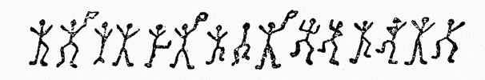
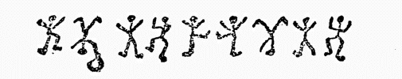
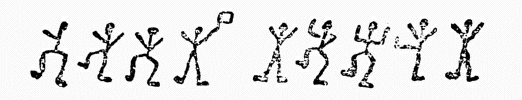
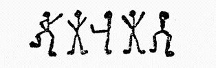
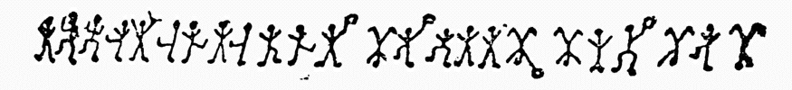
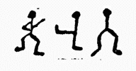
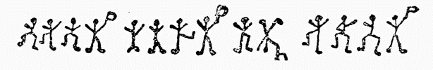

ホームズは全く黙りこんだまま、その脊の高い痩せた身体を猫脊にして、何時間も化学実験室に向っていた。そこからは頻りに、いやな悪臭がただよって来る、――彼の頭は胸に深くちぢこめられて、その恰好は、鈍い灰色の羽毛の、黒い
「そこで、ワトソン君、――」
彼は突然に口を開いた。
「君は南アフリカのある投資事業に、投資することは、思い止まってしまったのだね」
私はサッと驚かされてしまった。私は彼の不思議な直覚力と云ったようなものには、毎度のことでよく慣れていたが、しかしこの私の胸中の、秘中の秘事にずばりっと図星を指されたのには、全くあきれ返ってしまった。
「一たい君は、どうしてその事を知っていたのだね？」
私は訊き返した。
「さあワトソン君、ぐうの音が出まいがね」
「いや、全くその通りだ」
「それではね君、とにかくきれいに参ったと云う
「それはまたどうしてさ？」
「いや、実はもう五分の後には、君はきっと、それは馬鹿馬鹿しくわかり切ったことだと云うに相違ないからだよ」
「いやいや、僕は決して、そんなことは云わないよ」
「ワトソン君、それでは御説明に及ぶとしようかね」
ホームズは試験管を架にかけて、教授が講堂で、学生たちに講義でもする時のような恰好で話し出した。
「先人の研究材料を基本として、それを単純化して、推論の系統を立てると云うことは、決してそう難しいことでもないのだ。そしてもしこう云う
「どうも僕には何の事か解らないね」
「いや誠に御もっとも至極――しかしこれはごく手短に説明することが出来るんだ。ここにそれぞれ取り外れていた、鎖の輪があるからね。第一には、君が昨夜
「ははははははは、何と云う馬鹿馬鹿しく解り切ったことだ！」
私は叫んだ。
「全くその通りさ」
彼はちょっと不気嫌になって云った。
「どんな問題でも、一通りわかってしまうと君には皆小供だましのように解り切ったものになってしまうのだ。ではここに未解決の問題があるが、ワトソン君、これには君はどう云う解釈を与えるね？」
彼は一枚の紙を机の上に放り出して、また化学の分析の方に向き直った。
私はそれを見て驚いてしまった。それは、何かの符牒の文字のようなものであった。
「何んだ、――これは小供の絵ではないか――ホームズ君！」
私は叫んだ。
「ははははははは、そんなものに見えるのかね！」
「じゃ何なんだね？」
「これは、ノーフォークのリドリング公領［＃「リドリング公領」は底本では「リドリユグ公領」］のヒルトン・キューピット氏が、しきりに知りたがっていることなんだがね。この謎のような問題は、第一回の郵便配達で来て、その人は二番列車でその後から来ることになっているのだ。ああワトソン君。ベルが鳴っているが、あるいはその人かもしれない――」
重々しい足取りが、階段にきこえたと思う
「ああホームズさん、――これをどう云う風にお考えになりましたか？」
彼は叫んだ。
「あなたは大変、奇妙な神秘的なことをお好きでいらっしゃるそうですが、しかしこれはまた一段と、奇妙不可思議なものでしょう。私はあなたが、私が来る前に研究しておかれるようにと思って、前もってお送りしたわけです」
「これはたしかに奇妙なものですな」
ホームズは云った。
「ちょっと見れば、子供の
「いや、私は決してそう云うつもりではないのですが、ただ私の妻が大変なのです。実は妻が全く気絶するほど、これに驚かされたのです。彼の女は何にも云いませんが、しかし私はその目の中に、非常な
ホームズは紙片を取り上げて、太陽の光線をその上に直射せしめた。その紙片は、ノートブックから離し取ったもので、鉛筆で次のような

ホームズはしばらくの間、それを
「これはとても面白い、稀有の事件かもしれない」
彼は云った。
「ヒルトン・キューピットさん、あなたはお手紙の
「どうも私は説明は
我等の訪客は、その大きな強い手を、組んだり放したり、もじもじさせながら、神経質に語り出した。
「いずれお解りにならないところは、そちらの方からお訊ね下さい、――私は去年、結婚した時のことから申しますが、まずその前にお耳に入れておきたいことは、私の家は、決して金持ではありませんが、ここ約五世紀の間は、現在のリドリング村に住んでいて、ノーフォーク地方では、第一の旧家だと云うことです。去年の五十年祭には私はロンドンに来て、ランセル街の宿泊所に滞在しました。それは私の教区の牧師の、パーカーさんが滞在していた関係から、そこを選んだのでした。そうするとそこに、
とにかく彼の女は、――エルシーは卒直でした。もし私が訊ねさえしたら、何もかも隠さずに云ってくれたと思っています。「わたしにはとても厭な思い出がありますのよ」こう云って彼の女は語るのでした。「わたしはそれをどうにかして忘れてしまいたいと思いますわ。わたしはもう一切それには触れたくはありませんの。ヒルトンさん、あなたがもしわたしを求めて下さるなら、そりゃ過去において一点の曇もない女性を得ることになると申しますが、しかしいずれあなたは、わたしの言葉を全部信じて下さって、わたしの過去については、何にも訊ねないと云うことを約束して下さい。それでこのお約束が無理だと仰有るのでしたら、どうぞわたしをこのままのこしてノーフォークにお帰り下さい」と、これは私達の結婚の前日に、彼の女が私に云った言葉でした。それで私は彼の女の言葉をそのまま容れて、その後もこの約束をかたく守って来たのでした。
そしてその後私共は、この一年の間、結婚生活をつづけて来ましたが、私共は実に幸福でした。しかしほぼ一ヶ月前、――六月の末頃に、私は始めて
さていよいよこれから、私の話は、奇怪な部分に進みますが、一週間ばかり前、――そうです先週の火曜日でした。私は窓硝子の上に、この紙に画いてあるような、
古いイギリスっ児のこの人間は、単純で卒直で、目は大きく熱意のこもった、堂々たる風貌の紳士であった。彼がその妻に対する愛情と信実は、外部にまで溢れ出ていた。ホームズは全注意を集めて、この話を聞いていたが、この話が終ると、しばしの間は、
「いや、キューピットさん、――」
彼はようやく口を開いた。
「これはやはり、あなたが直接に奥さんにお訊ねになって、あなたに対して
ヒルトン・キューピットはしかし、その大きな頭を振った。
「ホームズさん、約束はどこまでも約束ですからね。もしエルシーが、話していいと思うくらいでしたら、彼から話してくれるでしょう。そしてまたもし話したくないことでしたら、私は彼の女に対して強要はしたくはありません。しかしそれと離れても、私には私で取るべき道はあるはずです。そしてそれを私は
「いや、そう云うのでしたら、私も全力をつくして御相談に
「いえ」
「大変閑静なところだろうと思われますが、新顔などが現われて、人々の噂に上るようなことがありますか？」
「えい、そうそうごく近所にありました。しかし私共の近所には、
「この象形文字は、たしかに意味がありましょう。もし全く出鱈目なものだとすれば、それはもうとても解釈が出来ませんが、しかしこれが組織的なものだとすれば、きっとどうにかして解くことが出来ますよ。しかし何しろこれはひどく短いもので、どうにも仕様が無いし、またあなたが持って来られた事柄も、はなはだ漠然としたことで、考査の基本にはなりませんからね。やはりこれはあなたが、一度ノーフォークにお帰りになって、注意深く監視をして、もう一度この踊り人の姿が現われた時に、正しく写し取った方がいいと思いますがね。先に窓硝子に画かれたものの写しを、見ることの出来ないのははなはだ遺憾ですが、いずれ近所に最近に現われた者に対しても、慎重の注意を向けなさい。そして新な証拠が得られたら、またお出で下さい。これがもうあなたに対しての、僕の最善のお答えです。それでヒルトン・キューピットさん、もし何か新な展開がありましたら、その時は私はいつでも早速出発して、ノーフォークのお宅でお目にかかりましょう」
この会見の後、シャーロック・ホームズは、しっかり考えこんでしまった。そしてこの後二三日の間、彼はたびたび手帳から、例の記号の画かれてある紙片を取り出しては、長いこと熱心に見つめているのであった。その後二週間ばかりの間、彼はそのことを、

「ワトソン君、出ないでいる方がよかろうと思われるんだがね」
「なぜ？」
「今朝ヒルトン・キューピットから電報が来たのだ。そらあの舞踏人形のヒルトン・キューピットを知っているだろう。彼は一時二十分にリバプール街に着くと云っているのだ。で、もうやがてここに見えるだろうと思うのさ。その電報を綜合すると、どうも何か重大な新らしい出来事があったように思われるのだ」
やがてまもなく、二輪馬車が全速力で、停車場から我等のノーフォークの紳士を乗せて、来たのであった。大変悩み衰えているらしく、目は疲れており、額には皺を寄せていた。
「これには全く、すっかり弱らされてしまいました、ホームズさん、――」
彼は半病人のように、腕椅子にもたれ寄りながら云った。
「どうでしょう、――自分の周囲に未知の未見の人間が、何か策動していて、しかもその上に妻がもう一寸刻みに、殺されてゆくと考えては、とても我慢が出来ませんでしょう？ いやこれこそ全く生きた気持はありませんよ。いや私の妻は刻々に、弱っていきます。もう刻々に弱って私の前から消えてしまいそうなんです」
「奥さんは何も仰有いませんか？」
「いえ、何も云いません。しかし彼の女は、云おうとしたこともあったようでしたが、やはり遂に云い出し得ませんでした。私は妻を助けようとしました。しかし私はまずかったので結局彼の女を怖れすくませてしまうだけでした。彼の女は私の古い家庭のこと、私の家庭の地方においての名聞、またその汚れない名誉と云ったようなものについて、言葉を触れさせることもありましたが、その時は私は、いよいよ大切な要点にゆくのだと思うと、もうその
「しかしあなた御自分で、気のついたものはありませんでしたか？」
「いやホームズさん、それはたくさんあります、私はぜひあなたにお目にかけたい、新な舞踏人の絵を持って来ました。そして更に重大なことは、私はある者を見たのです」
「ある者を、――それはその絵を画いた当人ですか？」
「そうです。私はその者が画いているところを見ました。いやとにかく、最初こう順序を立てて申しましょう。私がこの前にお訪ねして帰ってからまず、次の朝に新な舞踏人の絵を見たのでした。それは芝生の横にある、物置の真黒い扉の上に、白墨で画かれたものでしたが、私のところの正面の窓から目に止まったのでした。私はそれを正確に写し取って来ましたが、これがそれです」
彼は一枚の紙をひろげて、テーブルの上に置いた。それは次の図のような、象形記号と云ったようなものであった。

「素敵！ 素敵！ さあその先を、――」
ホームズは云った。
「私がそれを写し取ってしまってから、その絵を消してしまいましたが、その次の次の朝に、また別のが画かれてありました。それがこの方です」

ホームズは、手をもじゃもじゃさせ、歓喜の微笑をもらした。
「材料は着々と集まって来るぞ！」
彼は云った。
「それから三日の後、紙の上に走りがきされた、一枚の
しかし彼の女はこう云うと共に、彼の女の白い顔は、それは月光の中としても、あまりに白いと思われるように、蒼白になって来て、手を私の肩にしっかりとかけました。その時に物置小屋の蔭の中に、何か動いているのに目が止まりました。何かいっそう黒い影が、その蔭の
「その新らしいのも写し取りましたか？」
「えい、とても短いものですが、これです」
彼は更に新らしい紙片を取り出した。その新らしい舞踏人姿は次のようなものであった。

「いや、ちょっと――」
ホームズは云った。彼は非常に気乗りがして来たらしかった。
「これは最初ののに、ただ附けたしに画かれてありましたか、それとも全く別のものに離して画かれてありましたか？」
「これは
「素敵だ！ これは我々にとっては、最も重要なものだ。これではなはだ有望になった。さてヒルトン・キューピットさん、とても面白いですが、その先を云って下さい」
「ホームズさん、もう何も云うことはないのですが、――ただ私は、その夜妻が、私が悪漢をつかまえるために、飛び出るのを引き止めたことについて怒りました。そうすると妻は、私が怪我をしてはいけないと思ったからと云いわけするのでした。しばしの間は私に、妻はその者の何者であるかを知っていて、またその変な相図もわかっていて、彼の女の案じているのは、私ではなく、向うの者の怪我であると云うことが、閃きましたが、しかしまたよく考え直してみると、ホームズさん、彼の女の声の調子にも、また目の色にも、この疑念をかき消させるものがありました。それで私はやはり、彼の女が本当に心配したのは、私自身の身であったのだと考えるのです。これでもう話は終りました、が、さてどうすればよろしいのか、これに対する方法を教えていただきたいのですが。――まあ私の考えとしては、百姓の若者共を五六人も待ち伏せさせておいて、その者が出て来た時に、したたか打ちのめして、以後私共に近寄れないようにしようかとも思っていますが、――」
「いや、そんな簡単なことで、
ホームズは云った。
「一たいあなたはどのくらい、ロンドンに滞在することが出来ますか？」
「私は今日中には、帰宅しなければなりません。私はどんなことがあっても、妻を一人で夜を暮させることは出来ません。彼の女はもう非常に神経質になっていて、どうしても僕に帰宅するようにと云うのです」
「いや、それは御もっともです。しかしもしあなたが、滞在しておられるなら、一両日中にはあなたと一緒に出かけることが出来ると思いますが、――とにかく、この紙は置いて行って下さい。私はごく最近にお訪ねして、この事件に対しては、多少の吉報を
シャーロック・ホームズは、この訪客が立ち去るまでは、いかにもその職業的な、冷静を保っていたが、しかし彼の容子を見なれている私には、彼は内面では、ひどく
二時間ばかりの間、――彼は何枚も何枚も、数字と文字を書いては、その仕事に没頭した。全く私がその
「もしこの返事が、僕の注文通りのものだったらワトソン君、――君の
彼は云った。
「明日は我々はノーフォークに行って、あの人間が苦しんでいる秘密事に、決定的な新な展開を与えることが出来そうだ」
私はとても好奇心をそそられてしまった、しかしまた私は、彼はいつも自分の方から、いい時を見計らって話してくれることはよく知っているので、私の方から訊ねることはしなかった。
しかしその返電はなかなか来なかった。ホームズはその間を、呼鈴に注意しながら、ヤキモキして待った。二日は空しく過ぎてしまった。しかしその二日目の夕方、やっとヒルトン・キューピットから、一通の手紙が来た。その手紙によれば、ヒルトン・キューピットの身辺は、その後は静穏であったが、しかしその朝、またまた、日時計の上に、長いものを画いたものが乗っていたので、その写しをとって送ってよこしたのであった。それは次のようなものであった。

ホームズは数分間の間、――この奇怪な帯模様の絵に見入っていたが、突然、驚愕と困迷の声を上げて起ち上った。その顔は不安のために全く色を失っていた。
「これはうっかりしてしまったかもしれない！」
彼は云った。
「今夜これから、北ワルシャムに行く汽車があるかね？」
私は時間表をくってみた。ちょうど最終列車が出たばかりのところであった。
「じゃ仕方がない。――あしたの朝早く朝食をすまして、一番列車に乗ろう」
ホームズは云った。
「俺たちは出来るだけ早くゆかなければならない。これがすなわち待ち設けた海底電信なのだ。ちょっとハドソン夫人、また返事がいるかもしれませんが、――いやこれでよい、これでよい。この通信が手に入った以上は、いよいよ遅れてはならない。一時も早く、ヒルトン・キューピットに、この事を知らせてやらなければならない。これがすなわちあのノーフォークの先生を悩ましている、蜘蛛の網だからね」
たしかに着々とその通りに進んだ。私はその話を一時は子供威しと思ったのであったが、しかしその
私たちが北ワルシャムに着いて下車して、我々の行先を云うや否や、駅長が我々の前に走って来た。
彼はそしてこう云った。
「あなた方はロンドンからお出でになった、探偵の方々でいらっしゃいますか？」
ホームズの面上には、当惑の色が現われ出た。
「どうしてそう思うのです？」
「いえ実はじき今し方、検察官のマーチンさんが、ノーアウィッチから来て、ここを通過して行ったばかりなのです。しかしあるいはあなた方は、外科医でいらっしゃるかもしれない。――彼の女はまだ死にませんよ。いやさっききいた容子では、たしかにまだ死なないとのことでしたがね。あなた方は間に合うでしょう。――もっともどうせ絞首台にゆくことですがね」
ホームズの顔はすっかり不安に
「我々は、リドリング村に行く途中ですが、しかし実は、全くどんなことが起ったのか、きいてはいないのです」
彼は云った。
「それはなかなか大変なことですな」
駅長は云った。
「ヒルトン・キューピット夫妻は、どちらも撃たれたのだそうです。召使の者の云うには、まず夫人が
ホームズは一語も発せず、馬車に大急ぎで乗り、それから七
私たちが玄関の戸口に乗りつけると、その前面は、テニスコートの横であったが、黒い戸の建物と、台の上に乗っている日時計が目に止まった。これ等については私たちは、もちろん不思議な連想を持っているのである。一人の気のきいたような小さな男が、
「これはまた、ホームズ先生、――犯罪は今朝の三時に行われたばかりなのですが、ロンドンで、どうしてこんなに早くお聞きになったのですか？ 私と同時にこの現場にお出でになると云うことには全く驚きました」
「私はこのことを予想したのでした。実はそれを防止するためにやって来たのでしたが」
「それではあなたは、われわれの知らない、重大な証拠をお持ちになっていられるでしょう、――彼らは大変
「私はただあの舞踏人の話を知っているだけなんですが、――」
ホームズは云った。
「いずれ後刻、そのことはお話しましょう。いずれにしても、もう手遅れしてしまいましたが、しかし僕は、多少持ち合せている智識を、この事件の解決のために、出来るだけ提供し、利用したい希望なのですが、あなたはこの事件の調査については、私と協同して下さいますか、、またそれとも別々に行動しましょうか？」
「いえホームズ先生、協力してやらせて下されば光栄の至りですが、――」
その検察官は熱意をこめて云った。
「では早速証拠を持ち寄り合って、時を移さずこの邸内の調査を始めようではないですか、――」
検察官のマーティンは私の友人に大変好意を持っていて、私の友人を自由に活動させて、ただその結果を注意深く見ているだけであった。白髪の老田舎外科医が、ヒルトン・キューピット夫人の診察に来ていたが、その話に因れば、彼の女の傷は重傷ではあったが、しかし命には差支えがなかろうと云うことであった。
「ヒルトン・キューピットさんは動かされましたか？」
ホームズは訊ねた。
「いいえ、奥さんの
「あなたはいつ頃ここに来られました？」
「四時でした」
「外に誰かいましたか？」
「巡査が来ています」
「では何にも手を触れないわけですな？」
「えい、決して、――」
「なかなか慎重におやりになりましたな。誰があなたをお迎えにゆきました？」
「女中のサウンダーでした」
「最初に見つけたのはその女だったのですか？」
「その女とそれから、
「その人たちはどこにいますか？」
「たぶん台所にいるでしょう」
「そう、それでは早速、その人たちからきいてみよう」
樫の腰板の、高い窓のついた古い広間が、審理所にあてられた。ホームズは大きな古い型の椅子に腰かけて、古色蒼然とした顔から
その二人の女は、よく明瞭に話してくれた。その話に因ると、彼の女たちは爆音に目をさまさせられたのであったが、その時この爆音は、ものの一分も間があったろうか、すぐにきえたそうである。彼の女たちは室をとなり合せて、寝ていたのであったがキング女の方がサウンダー女の方に、驚いて飛びこんで行った。そして二人は一緒に階段を下りた。書斎の
以上のことは女中たちの陳述の大要であるが、検察官マーティンに答えた言葉では、
「これはなかなか慎重にかからなければならない大問題ですな」
ホームズは仕事仲間に云った。
「さあ、それでは、一つ室の中を徹底的に調べてみようじゃないですか」
書斎は小さな室であった。三方は書物を立て並べられ、
「手に何にもついていなくっては、何にもならない、――もっとももしついていたとすれば、もうそれで何もかも一目瞭然だけれど、――」
ホームズは云った。「しかしもっとも実弾がうまく装填されておれば、何発でも何の痕跡ものこさずに、撃つことも出来ることは出来るのだが、――さてもう、キューピット氏の死体は、動かしてもよろしいでしょう。それから
「何しろ非常な大手術をしなければなりませんな。しかし実弾は四発ありますから、二発で二人が撃たれ、弾丸の勘定はよく合いますがな」
「そう思いますか？」
ホームズは云った。
「あなたはあのたしかに、窓の縁を射た弾丸も勘定に入れておられるでしょうな？」
彼は突然振り返って、痩せた長い指で一点を指さした。なるほど、窓の下際から一
「ああ！」
検察官は歎声を上げた。
「どうしてあんなものに目が止まったのですか？」
「いや私は探していたのです」
「これは怖ろしい！」
田舎医者は云った。
「いや確に仰せの通りに相違ありません。それでは、第三弾が発射されてるわけですから、第三者がいなければならないわけですな。しかしそうしたら、どんな者がここに現われて、そしてどうして遁げ出したのでしょう？」
「そのことがすなわち、これからの我々の問題ですがね」
シャーロック・ホームズが云った。
「ね――検察官のマーティンさん、女中たちは室を出るや否や、火薬の臭がしたと云った時に私はそれはとても重要なことだと云ったでしょう？」
「えい、たしかに仰有いました。しかし私は正直のところ、あまりそれに同感も感じていませんでした」
「このことはつまり、発射された時には、室のドアも窓も開いていたのだと云うことを暗示しているのです。もしそうでないとしたら、そんなに早く、火薬の臭が家中に、ただよい渡るはずはないからね。それにはどうしても一陣の隙間風を必要とする。ドアも窓も、ほんのちょっとの間開かれたのだ」
「それはどうして証明なさいますか？」
「ローソクが傾いてへっていなかったから、――」
「ああこれは
検察官は叫んだ。
「ああ、大したものだ！」
「この悲劇の時は、窓は開いていたと云うことを認めてみると、この事件には第三者があって、その開いていた窓を通して、窓の外から射撃したに相違ないと云うことが考えられる。それからその者を撃った弾丸のどれかは窓縁に当ったに相違ない。私は見渡したら果して、弾痕があった！」
「しかしそうしたとしたら、窓が閉められて、しかも内側からしっかりと締めつけられたのはどう云うわけでしょう？」
「女と云うものは、本能的に窓を閉めて、しかも締めつけるものではないですかね。ああ、おやおや、――これは何だろう？」
机の上に婦人の
「これは法廷で必要だろうから、よく注意して保管しておくように」
ホームズは中味をしっかりと入れて、その手提袋を、検察官に渡しながら云った。
「さて今度はこの第三弾の正体をつき止めなければならないことになった、――もっともこれは木の裂け具合から見て、明かに内側から発射されたものだが、――さて
「はあ、左様でございます。わたしはその音で、目を醒ましたのでございましたが、どうもはっきりとはいたしませんが、とにかく大変大きな音でございました」
「君は一度に二発うたれたのだと云うようには感ぜられなかったかね？」
「さあ、それははっきりとは申し上げられないんでございますが――」
「しかしそれはきっとそうだったろう。さて検察官のマーティンさん、もうこの室で調査することは、全く尽きてしまったと思われるが、何でしたら今度は庭の方を歩きまわって、新たな証拠をさがそうじゃないかね」
書斎の窓の下からずっと、花壇になっていたが、我々はそこに近づいてみて、あっと驚かされてしまった。花は踏みにじられ、柔かな土の上には、足跡が一ぱいについていた。それは男性の大きな足跡で、特に足先が鋭く長い足のものであった。ホームズは草や木のあいだを、レトリーバー犬が傷ついた鳥を探すように、探しまわったが、遂に彼はひどく喜んだ叫びを上げて、身をこごめて、小さな
「僕はたしかに、ピストル又は、薬莢の自動排除装置があって、きっと第三弾があるに相違ないと睨んでいた、――」
彼は云った。
「さあ検察官マーティンさん、これでもうほとんど、この事件も調査が出来上ったですな」
この田舎検察官はしかし、ホームズのあまりに急速な、あまりにも鮮かな探査振りに、ただ驚歎の色を現わしているのであった。最初の
「犯人は誰でしょう？」
彼は訊ねた。
「いやその事はいずれ後にしましょう。実はこの問題には、まだあなたにはっきりと説明しかねることが二三点あるんですがね。とにかくここまで来たのですから、僕はこの上もひた押しに押し切った方がいいと思われるのです。それから全部を明瞭に発表しましょう」
「犯人があがるまでは、ホームズ先生、あなたの御自由におやり下さい」
「いや別に秘密主義でゆこうと云う意味でもないのですが、いずれ事件の進行中に、長い込み入った説明をすることは難かしいことですからね。まあ僕はこの事件のすべての鍵は持っています。もし夫人が遂に意識を回復しなくっても、この事件は明瞭にすることが出来ますよ。まず第一に、この近所に、エルライジと云う名前で通っている旅館があるかどうか、確かめたいものだがね」
下僕の者共をよく審問してみたが、しかし誰もそんな旅館を知っているものはなかった。その
「そこはとても人里離れた農場かね？」
「えい、とても寂しいところです」
「どうだろう、――そこの人達は、まだここの事件について知らないだろうか？」
「さあ、たぶんまだきこえてはいないだろうと思いますが、――」
ホームズはしばらくの間、――
「おい若者君、――馬の用意をしてくれたまえ。御苦労だがこの書付を、エルライジと云う人の農場に持って行ってもらいたいんだ」
彼はポケットから、舞踏人のいろいろの
「検察官――」
ホームズは叫んだ。
「護衛の者を派遣してもらうよう、打電した方がいいと思いますがね。もし僕の胸算用に誤りがないとすれば、あなたはとても危険な犯人を護送しなければならないことになるかもしれないと思われますよ。いやこの書付を持ってゆく子供は、きっとあなたに電報を打たせることになりますよ。さてワトソン君、もし午後の汽車があるなら、我々はそれに乗った方がよかろう。やってしまいたい、面白い化学の分析の仕事もあったし、またこの事件の方はもう、さっさと片づいてしまいそうだから――」
その若者が出発してしまってからは、ホームズは今度は、下僕たちに指図した。もし夫人を訪ねて来た者があっても、決してその状態を知らせてはならないこと、――そしてその者を早速、応接間に通すこと――こう云うことを彼は、熱心に云い含めた。それから最後に彼は、もう仕事もなくなったから、いずれまた何か出てくるまで、ブラブラしていようじゃないかね、と云いながら、応接間の方に引き上げて行った。田舎医者は、患者のところに出かけたので、もう私と検察官と三人だけになってしまった。
「さあそれでは、この一時間の間を、最も愉快に、最も有益に過そう」
ホームズはこう云って、テーブルに椅子を引き寄せ、変なおどけたような、舞踏人を書いた
「いや、わが友人のワトソン君、君には君の持前の好奇心を満足させずに、今まで待たせておいたことの、埋め合せをしなければならないし、それから検察官、あなたにはこの事件の一切は、最も
彼は簡単に要領よく、前に述べたようなことを概略して話すのであった。
「ここにこう云う全く奇妙なものがありますがね。まあ誰が見たって、これがあんな恐ろしい悲劇の、先駆であったと云ったら、まず一笑に附してしまいたくなりますがね。私は元来、暗号記号については、いささか自信があって、それについてはつまらない論文もありますが、その中で私は、百六十種の暗号を解析してみましたが、しかしこれはまた、私にとっても全く最初のものでした。この暗号を案出したものの考えでは、これに意味があるなどと云うことは巧みに隠して、ただ子供たちを、気まぐれにスケッチしたものだと思わせるつもりなのだがね。
しかし、これも結局文字の代用であるとわかって、それからあらゆる暗号文字の解釈に適用する法則をあてはめたところ、この解釈も容易でした。最初に私の手に入ったものは、ごく短いものだったので、この記号はアルファベットのＥを表わすものだと云うことを、云い切られただけでした。御存じの通り英語のアルファベットの中では、Ｅは最も普通の文字で、どんな短い文章のなかでも、一番出て来る文字ですからな。この最初手に入った文章の中では、十五の記号の中で、これは四つだけあって、一番多かったので、これをＥと帰納したわけです。それから記号もある時は旗を持ち、ある場合は持っていないが、段々考えたらこの旗は、文章を言葉に区切るためのものでした。私はこれを仮説として立ててをＥと置いたのです。
しかしここまではいいとして、これから先がなかなか大変なのです。英語の文字では、Ｅの後に来るものは、決してそう決定的ではない。ちょっとした文章などで平均を取ってみたら、あるいは反対の現象を現わしているかもしれない。まあ大ざっぱに云ってみて、Ｔ、Ａ、Ｏ、Ｉ、Ｎ、Ｓ、Ｈ、Ｒ、Ｄ、Ｌ、――と云うのは、その頻出数の順序であるが、しかし、Ｔ、Ａ、Ｏ、Ｉなどは、実に伯仲しているからね。これ等の結合を考えて、意味を見出そうと云うことは、それは全く際限の無い仕事になる。それで私は、新たな材料の来るのを待った。第二回のヒルトン・キューピット氏との会見では、私は二つの短い文章と、一つの
これだけのことを認容してみると、もう記号のはそれぞれ、Ｎ、Ｖ、Ｒ、と云うことになる。
しかしまだまだ私には、難関があるのであったが、幸いに他の文字の解釈に、都合のよい思いつきが浮んだ。つまりもし私の予想が違わないとすれば、この哀訴が夫人の以前の腹心の者から来たものとすれば、両端にＥがあって、真中に他の三文字のあるものは、結局、ELSIE と云う名前に、ぴったりと
.M. ERE. .ESL. NE.
そこで、この中で最初の文字はＡに相違ない、と云うことを推定した。と云うのは、この短い文章の中で、三度も出ているから、このよく出て来る文字はＡに相違ないと考えた。これは大変有益な発見であった。そこで、第二の場所は、Ｈであろうと想定してみた。そうしてまたあてはめてみると、
AM HERE A. ESLANE.
となり、また、名前の解りきった空所を満たしてみると、
AM HERE A. E SLANEY.
私はもうかなりの文字を得たので、今度は相当の自信を持って、第二の文章に進むことが出来ることとなった。それをやってみると今度はこんなものになった。
A. ELRI. ES.
さてこうなると、私は、Ｔと、Ｇを空所に入れると、やっと意味をなして来ることに気がついた――そしてこれはこの筆者のいる家か、旅館の名であろうと推定したわけだ」検察官マーティンと私は、この我々の面前の難事業を、快刀で乱麻を断つように、明快に解決を与えた、私の友人の説明に、全く魅了されて傾聴した。
「先生、それからどうなされたのですか？」
検察官は訊ねた。
「私は種々の理由から、この Abe Slaney. と云うのは、
「
ELSIE. RE. ARE TO MEET THY GO.
それでこれにＰとＤを加えてみると、もうこの「事件を扱うに際して、あなたと協力することが出来るなどと云うことは全く、望外の特権ですね」
検察官は静かに云い出した。
「失礼して卒直に申しますが、あなたはあなた御自身が御満足なさればおよろしいのですが、私は上官に対して、私の職責を全うしなければなりません。それでもしそのエルライジにいる、アベイ・スラネーなる者が、本当に下手人であるとすれば、私がこうしている中に、逃亡でもしてしまうと、とても大問題になりますが、――」
「いや御心配はいらない、――彼は逃亡などはおそらくしないから、――」
「どうしてそう仰有います？」
「逃亡することはもう、犯罪を自白していることだからね」
「それでは逮捕に向おうではございませんか？」
「いや、もうじきにここに来る」
「ではどうしてここになぞ来るのでしょう？」
「さっき手紙を書いて、招んでやったから、――」
「いやホームズ先生、それはちょっと
「いや私も、その手紙のこしらえ方は知っているつもりだがね」
シャーロック・ホームズは云った。
「論より証拠――大体間違いはなさそうですよ。ほら、その紳士御自身で、御出張になったよ」
一人の男が玄関の方に、大股に歩いて来るのであった。その男は、背の高い、男振りのよい、色の浅黒い顔で、灰色のフランネルの着物を着てパナマの帽子を冠り、
「諸君、――」
ホームズは静かに云った。
「これは我々はドアの蔭にかくれた方がいいようだよ。あんな奴の相手になるには、うっかりしたことは出来ないからね。それから検察官、手錠が入りますよ。さあ黙って、――」
一分間ほどの間――我々は息を殺して待った。忘れようとしても、決して忘れることの出来ない一分間であった。やがてドアは開いて、その男は中に入って来た。と、――思う
「いや各々方、なかなかうまく、仕組んだと云うわけですか、――これはとんだ災難に遭ったものだ。しかし僕はヒルトン・キューピット夫人の手紙に答えるために来たのです。夫人はここに居るかどうか、教えてくれないですか？ 夫人は僕を陥れることに
「ヒルトン・キューピット夫人は、瀕死の重傷を負うているのだよ」
その男は
「あなた方は気が違っているのだ！」
その男は激しく叫んだ。
「負傷したのはヒルトン・キューピットで、彼の女のはずはない。誰があの可愛いエルシーなどを傷つけるものか！ 私は彼の女を威かしはしたかもしれないが、それは神様もお許し下さろう。――しかし私は彼の女の美しい頭の、髪の毛一本にさえも触れはしないのだ。さあそれを取り消しなさい。彼の女は決して負傷しないと云って下さい！」
「彼の女は死んだ夫の
彼は深い
「いや、皆さん、決して何も隠し立てはしません」
彼は言葉をつづけた。
「もし私が彼を撃ったと云うなら、彼もまた私を撃っているのです。ここに殺人罪はありません。またもしあなた方が、私があの女を撃ったのだとお思いになるなら、それはあなた方が、私とあの女とをよく知らないからです。私は断言して
「夫人は君のそう云う人となりを知ったので、君の把握から遁げ出したのだ」
ホームズは厳しく云った。
「夫人は君を避けるために
「もしエルシーが死ぬなら、そりゃもうこの身体などは、どうなったっておかまいなしだ」
その
「これを御覧下さい」
彼は目を疑い深く閃かせながら叫ぶのであった。
「あなた方は私をおどかしているのではないでしょうね？ もし彼の女があなた方の仰せのように非常に重態であるとしたら、一たい誰がこの手紙をかいたのでしょう？」
彼はその紙片をテーブルの上に投げてよこした。
「君をここに来させるために、僕が書いたのだ」
「あなたが書きましたって？ この世界中でわれわれの仲間の
「君、誰かが案出したものとすれば、また誰かがそれを解くことが出来るさ」
ホームズは云った。
「さてスラネー君、君をノーアウッドに、連れてゆく馬車が来た。しかしまだ、君の悪業に対して、多少の罪滅しをする時間はある。君は気がついているかどうか、――実はヒルトン・キューピット夫人は、
「もうどうにでもなるがよい」
「えい一そのこと、何もかも有りのままにさらけ出してしまいましょう」
「そうだ。それが一番君のためなのだ。本職もそれを君にすすめる」
検察官はあたかも英国刑法の、厳粛な公明を示すものの如く云った。
スラネーは肩をすくめた。
「早速申し上げましょう」
彼は語り出した。
「まず第一に皆さんの御了解を得たいことは、私はあの夫人とは、ごく小供の時からの知り合いであると云うことです。私共も七人の仲間で
そしてとにかく私がここに来てから一ヶ月になります。あの農場に住んで、地下の一室を持って、夜間は毎夜のように、自由に出入が出来ました。しかし誰もそのことは知りませんでした。私はあらゆる手段をつくして、エルシーを誘い出そうとしました。彼の女はたしかに、通牒は読んだに相違なく、遂に一度だけは返事をくれました。それに私は少し気をよくして、彼の女の脅迫を始めたのです。それから彼の女は一本の手紙をよこして、私に立ち去ってくれるようにと、懇願して来ました。そしてもし夫の身辺に、その名誉を汚すようなことでも起ったら、もう彼の女は立っても寝てもいられないからと云うのでした。そして、もし私が素直にここを立ち去って、彼の女を安穏にのこして行ってくれるなら、夫の眠っているのを見計らって、
「さあ行こう、――」
「ちょっと彼の女に逢わせて下さいませんでしょうか？」
「いや、夫人はまだ意識が回復しないのだ。シャーロック・ホームズ先生、――何卒この後も重大事件が突発した時は、よろしく御助力下さいますよう、幾重にもお願い申します」
私たちは窓際に立って、馬車の遠ざかってゆくのを眺めた。それから私は振り返った途端に犯人がテーブルの上に投げて行った、紙片を丸めたものを見つけた。それはホームズが彼をおびき寄せた手紙であった。
「さあ、君、これを読めるかね？ ワトソン君、――」
ホームズは笑いながら云った。
それは一語もなく、ただ次のような舞踏人の短い一行であった。

「いや、僕が使った、暗号表を用いれば、これはもうごく簡単なものだとわかるよ」
ホームズは云った。
「これは、"COME HERE AT ONCE"（すぐに来い）と云うだけのことだよ、いくら何でもこの招待状では、彼は万障を繰合せても来ると思ったのさ。何しろこうしたものを書ける者は、夫人以外には無いのだと彼は信じているのだからね。さてこうして、親愛なワトソン君、我々もこの悪業の手先に使われていた舞踏人を、今度は善い意味のものに転化してしまったし、また僕も君の覚書の中に、一つはなはだ特異な件をお土産にしようと云う約束も、これでともかく果したわけだ。三時四十分の汽車があるが、我々はベーカー街に行って、夕食でも食べるとしようか、――」
簡単に結末だけを。
この
それからヒルトン・キューピット夫人については、その後負傷はすっかり癒り、寡婦として一貫し、その生涯を救貧事業と、亡夫の遺産管理に専念していると云うことをきいただけである。